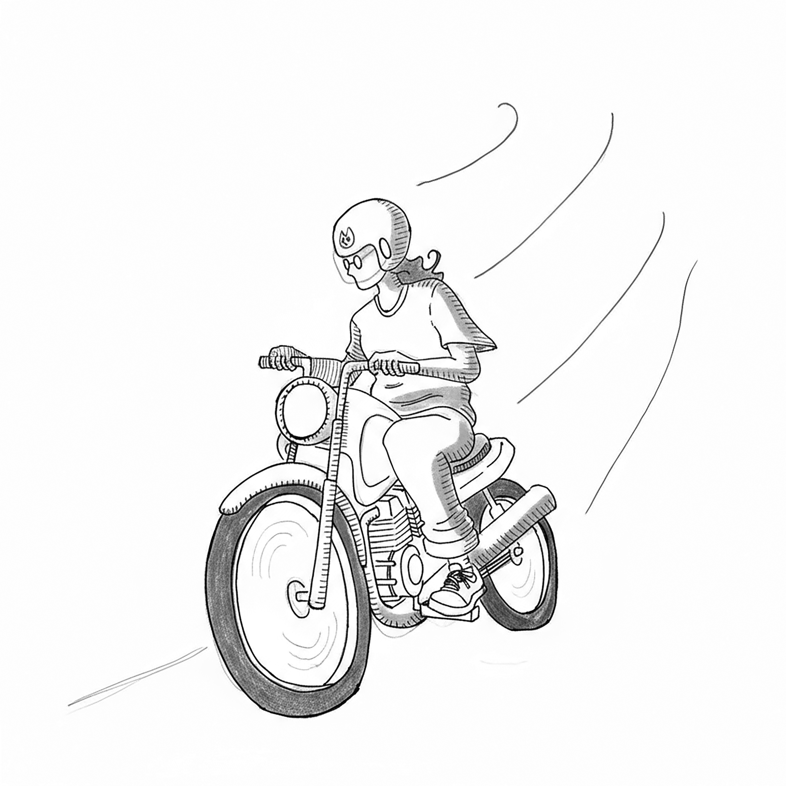
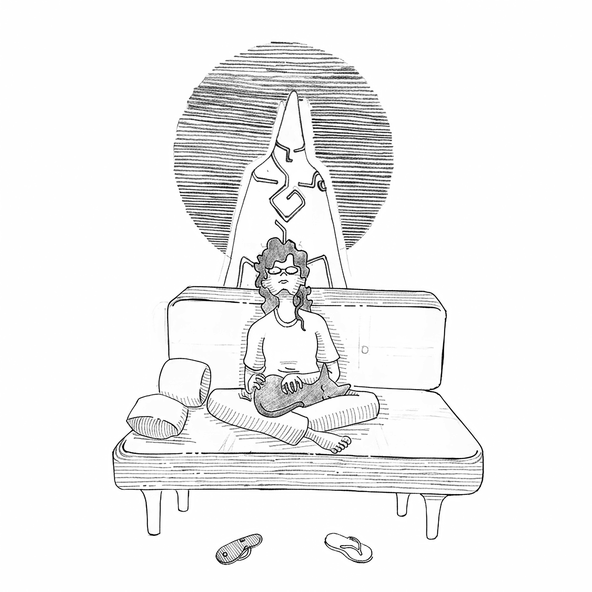

— Pessoal, na aula de hoje nós vamos falar sobre sustentabilidade. Alguém aqui sabe dizer o que essa palavra significa?
— Professora Rita? Eu sei!
— Pessoal, silêncio! Vamos deixar a colega de vocês falar. Quando eu contar até três, quero ouvir apenas a voz da Ana Carolina. Combinado?
— Professora, sustentabilidade é a gente jogar o lixo no lugar certo. Igual à lixeira que tem no pátio da escola: latinha de refrigerante na lixeira amarela, papel na azul e vidro... ah, esse eu esqueci agora.
— Muito bem, Ana Carolina! Boa tentativa! Mas, pessoal, o que a Ana Carolina disse é apenas uma ação entre uma infinidade de outras que precisamos realizar para alcançar a sustentabilidade. E hoje vamos descobrir como surgiu a ideia de sustentabilidade.
Achei! Finalmente... Após percorrer várias escolas da cidade, essa professora me parece perfeita: recém-formada, cheia de energia e planos, lecionando Ciências da Natureza para o Ensino Fundamental em uma escola pública de sua cidade.
Agora, a parte mais trabalhosa será me hospedar em sua mente sem causar a ela nenhum tipo de dano. Para isso, terei que esperar o momento certo, ou seja, quando estiver dormindo profundamente.
Iniciando a Etapa II. Ela acabou de sair da aula e está indo para a sala dos professores pegar sua bolsa e a chave da motocicleta.
Essa menina voa! Se ela morrer nesse trânsito caótico, terei um trabalhão para encontrar outra professora de Ciências da Natureza com o mesmo perfil.

Ela está parando. Entrou em uma padaria. Voltou com uma sacolinha e continuou a viagem.
— Ô, seu jumento! Comprou a carteira, foi?!
Um carro quase a derrubou, deixando-a muito irritada. Só não compreendi essa coisa de "jumento"... deixa pra lá. Depois, quando eu estiver na mente dela, certamente compreenderei.
Ela chegou a um edifício. Conduziu a motoca até o subsolo e tomou o elevador, apertando o 5. Caminhou por um corredor mal iluminado e abriu a porta do 501.
Em seguida, entrou no apartamento, arremessando os sapatos em direção à sacada. Retirou da sacola um saquinho com a imagem de um gato estampado; logo apareceu o bichano. Então, agarrou o felino, sentou-se no sofá, abriu o saco de ração e foi dando a ele um grãozinho de cada vez.

— E aí, Léozinho? Conta pra mamãe como foi o seu dia. Ficou com saudades? O meu dia foi ótimo! Dei uma aula legal, acho que a turma gostou muito. Ah! Nem te conto... sabe aquela professora gente boa que leciona História no Fundamental II? Pois é, ela me convidou para ir à casa dela no sábado; niver de um aninho da filha. Irado, né? Quem sabe eu não acho um gatinho por lá, lindinho como você...
Rita passou horas conversando com o bichano. Depois, se lavou, preparou alguns alimentos e, finalmente, se recolheu ao quarto. Contudo, não pegou no sono e passou horas clicando em seu smartphone.
Agora sim. Já passa das três da madrugada, e Rita dorme profundamente.
Hospedar-se em uma mente não é uma tarefa fácil — mesmo para nós, seres transfísicos. A mente dos humanos possui muitas proteções, mesmo durante o sono. Por isso, precisamos criar nela uma situação extrema, imitando uma falência cerebral, algo que, entre os humanos, é conhecido como “EQM”, ou experiência de quase-morte.
Emitimos uma descarga elétrica diretamente em seu córtex cerebral. Em seguida, ao ocorrer uma parada momentânea da atividade funcional do cérebro e do tronco encefálico, localizamos a frequência das ondas eletromagnéticas do plasma espiritual do hospedeiro, emparelhamos suas ondas com as nossas e entramos.
No momento em que acessamos a mente humana, ocorre uma verdadeira revolução. Tanto o hospedeiro quanto nós sofremos um tremendo choque, causado pela sobreposição de memórias.
Quando o implante é concluído, o hospedeiro permanece apenas com suas próprias memórias, não conseguindo acessar as nossas. Em casos muito raros, pode ocorrer o vazamento de memórias do hóspede para o hipocampo do hospedeiro. Quando tal falha acontece, o hospedeiro desenvolve um quadro de confusão mental, culminando no declínio de suas habilidades cognitivas, o que os humanos costumam chamar de demência.
Pronto. Lá vai a descarga elétrica!
— Bom dia, Léozinho! Mamãe já vai trabalhar. Cuide bem da casa, viu?
Nossa! Incrível! Uma explosão de sensações! Exatamente como nos foi alertado durante o treinamento. O ar entrando nos pulmões, o peso do corpo, a textura das coisas, um turbilhão de cores, sons e ruídos... e o vento, então?! Sentir o vento é maravilhoso! Fazer parte deste planeta é um grande privilégio…
— Bom dia, professora Rita! Como passou?
— Oi, colega! Passei bem, obrigada. Quer dizer... não tão bem.
— O que foi?
— Não sei. Tive uma noite horrível! Um pesadelo atrás do outro. Acho que dormi com a barriga muito cheia.
— Isso acontece.